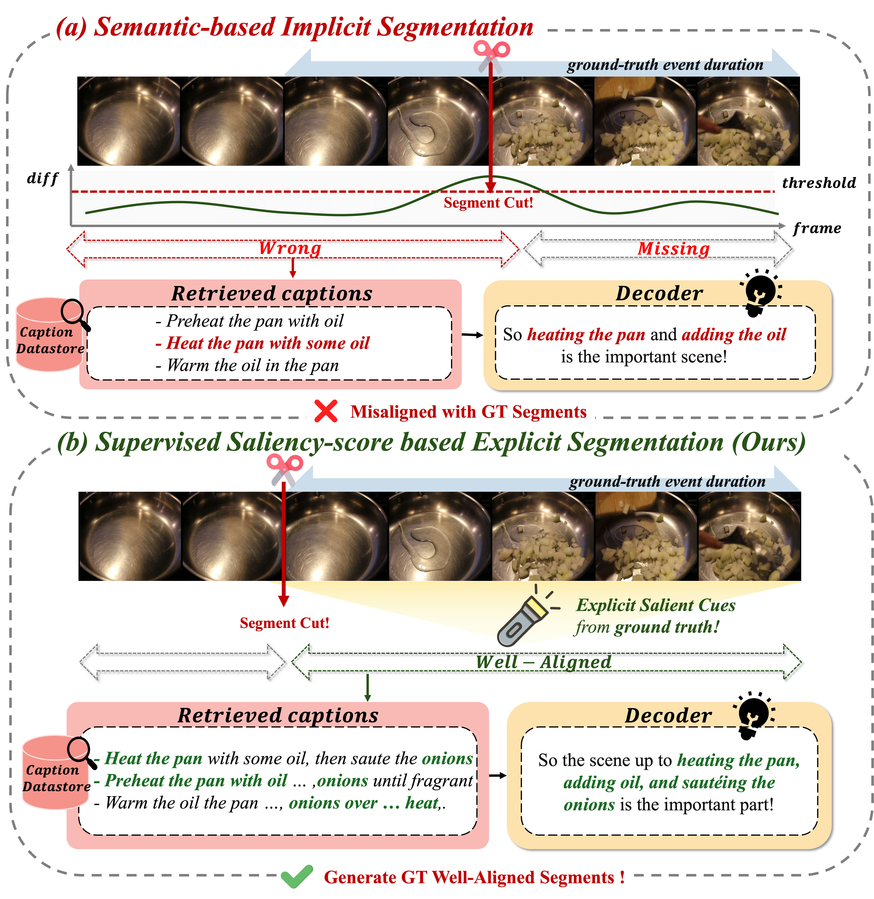
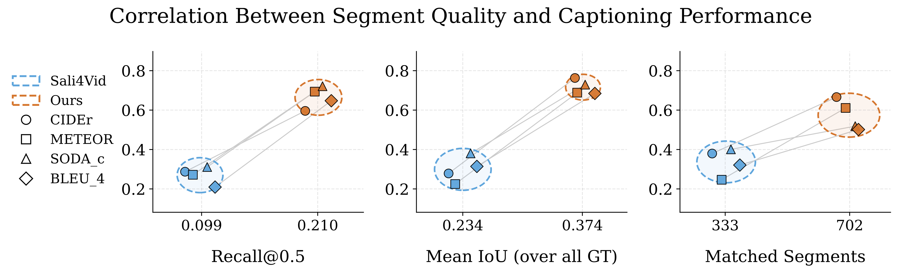
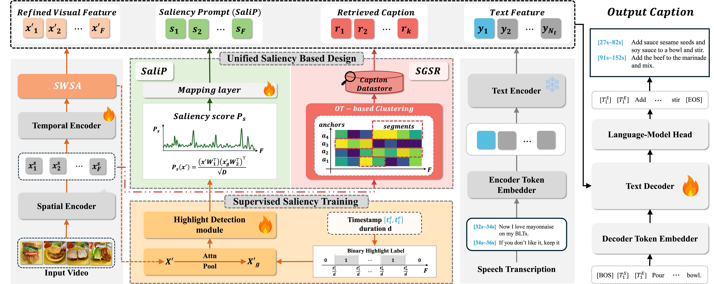
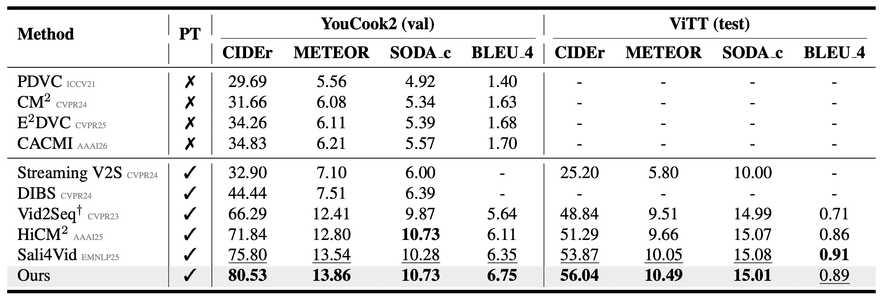
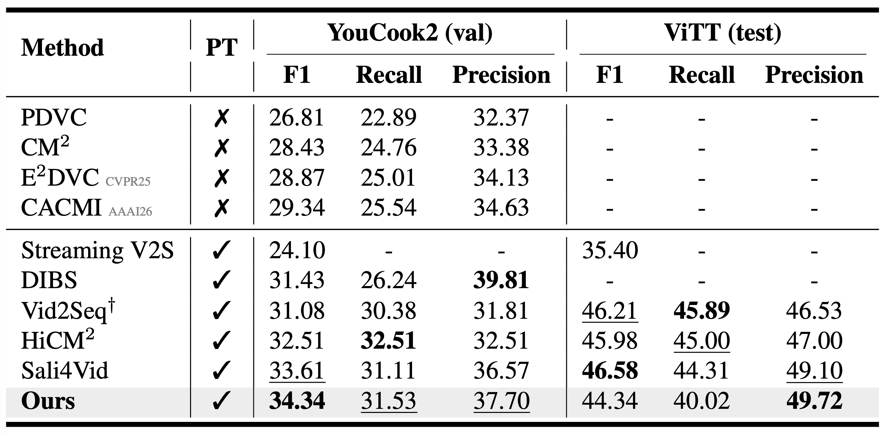
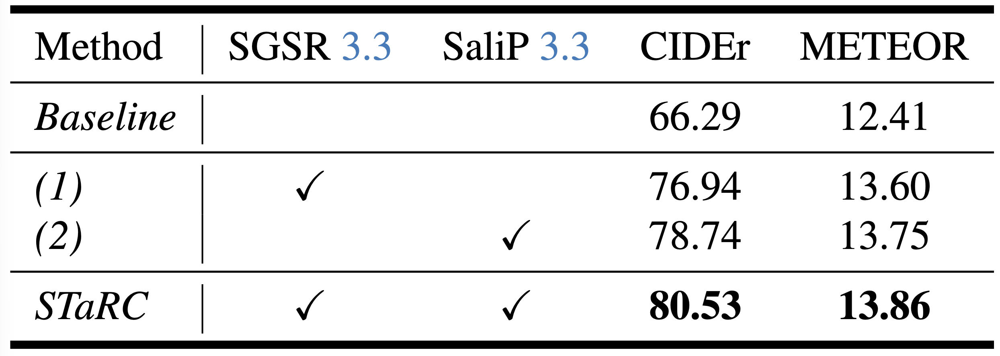
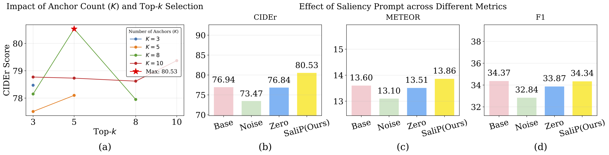
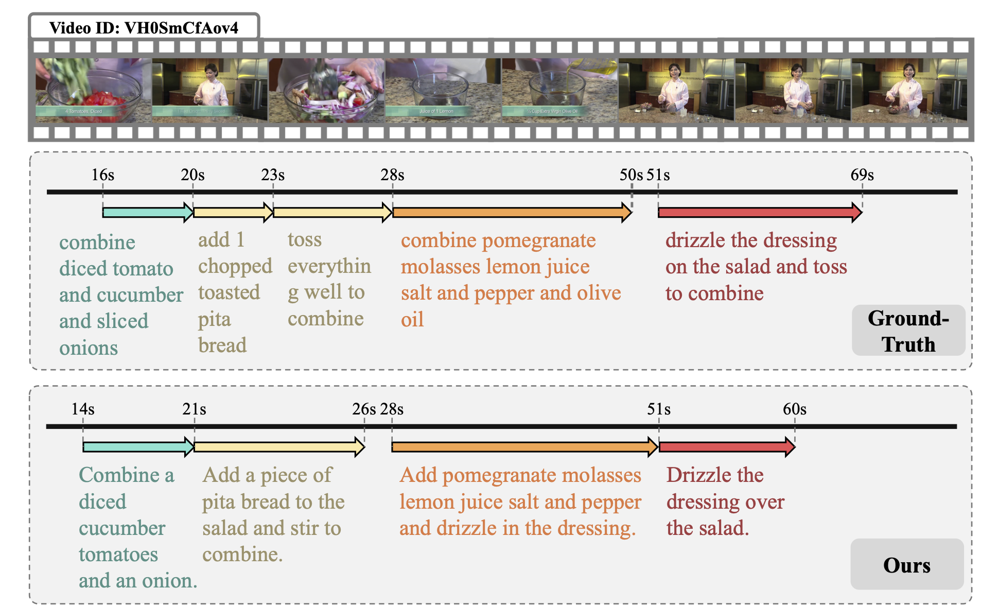

Supervised Saliency Learning
Convert event boundaries into binary frame-level highlight labels and train a highlight detection module without extra annotation.
Dense Video Captioning · Retrieval-Augmented DVC · Video Understanding
Hanyang University

STaRC learns frame-level saliency from event annotations and uses it as a unified signal for both retrieval and caption generation.
Key Observation
Retrieval-augmented DVC depends on the quality of temporal segmentation. When predicted segments align better with ground-truth event boundaries, the retrieved captions become more relevant and downstream caption quality improves consistently.

Method Overview
STaRC first learns frame-level saliency from existing DVC event annotations. The learned saliency scores are then shared by two modules: SGSR for event-aligned retrieval and SaliP for saliency-aware decoding.

Convert event boundaries into binary frame-level highlight labels and train a highlight detection module without extra annotation.
Use saliency-aware Optimal Transport clustering to form event-aligned retrieval segments and retrieve more relevant captions.
Project saliency scores into prompt tokens and inject them into the decoder for explicit temporal grounding.
Contributions
Main Results


Why It Works
Each component improves the baseline independently, and combining them gives the strongest performance. Additional analyses show that the quality of saliency prompts and the selection of retrieval segments directly affect captioning performance.


Qualitative Results
STaRC predicts event durations that align closely with ground-truth segments and generates captions that describe the corresponding events coherently.

Citation
@article{choi2026follow,
title={Follow the Saliency: Supervised Saliency for Retrieval-augmented Dense Video Captioning},
author={Choi, Seunghee and Jeon, MinJu and Oh, Hyunwoo and Lee, Jihwan and Kim, Dong-Jin},
journal={arXiv preprint arXiv:2603.11460},
year={2026}
}